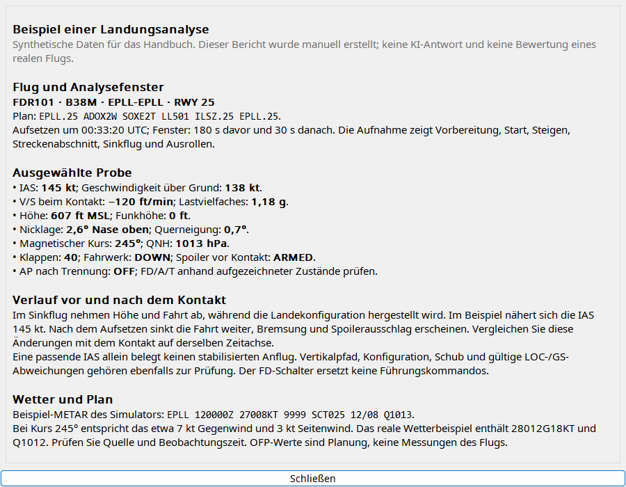
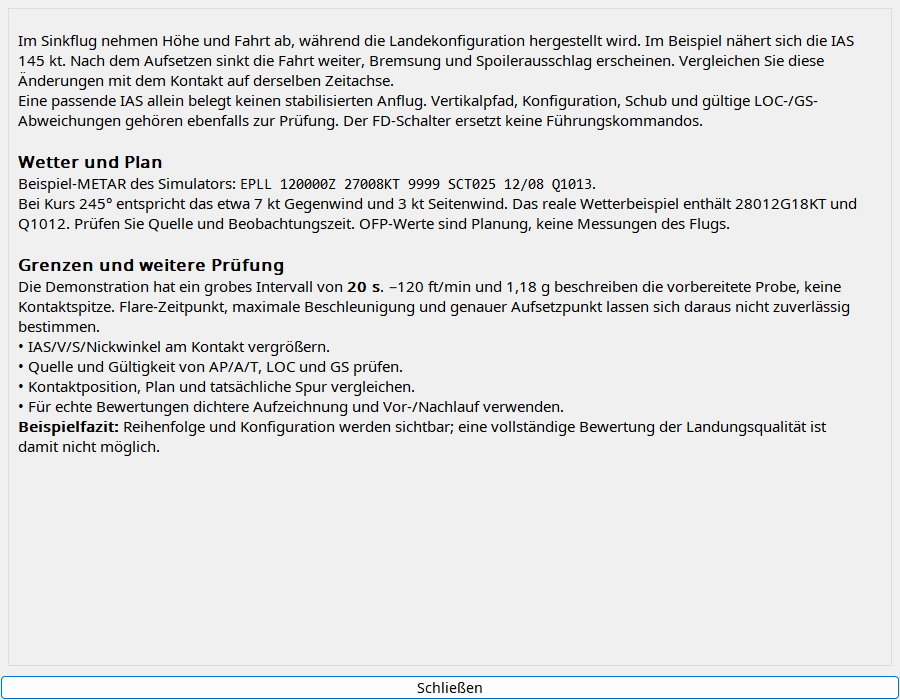

Wählen Sie zuerst den richtigen Kontakt, besonders nach Touch-and-go. Prüfen Sie Datenumfang, Wetter und Plan. Der Auftrag fordert Anwendungssprache und Trennung von Planung/Messung. Berichte werden gespeichert; Öffnen fragt nicht neu an. Shift mit Analyse fordert einen neuen Bericht. Prüfen Sie Schlussfolgerungen an Diagrammen.
Ereignis wählen, Anbieter konfigurieren, Analyse anfordern. Simulator-Trainingshilfe, möglicherweise fehlerhaft.
| Option / Aktion | Verhalten und Einschränkungen |
|---|---|
| Zeitfenster | Start standardmäßig 60/30 s, Landung 180/30 s davor/danach; je 1–300 s innerhalb der Aufnahme. |
| Eingabe | Verfügbare Telemetrie und Plan-/FMC-/Wetterkontext; Planung getrennt von Messung, keine erfundenen fehlenden Felder. |
| Sprache | Prompt fordert Oberflächensprache und unveränderte Luftfahrtkennungen; Modell kann Anweisungen missachten. |
| Anbieter | Codex CLI, Gemini, Ollama separat authentifizieren/konfigurieren; Kontext/Timeout begrenzen Anfragen. |
| Bericht | Nativ formatiertes Markdown, beim Ereignis gespeichert. Gespeicherten Bericht ohne neue Anfrage öffnen. |
| Bewertung | Zeitreihe prüfen: Abtastung kann Belastungsspitze verpassen; Liftoff nicht Rotationsbeginn, stabile IAS nicht automatisch VREF. |

